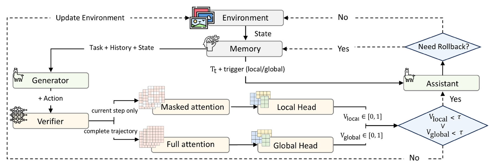
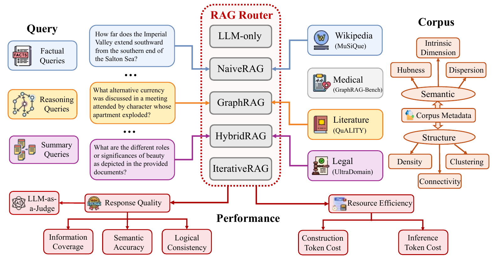
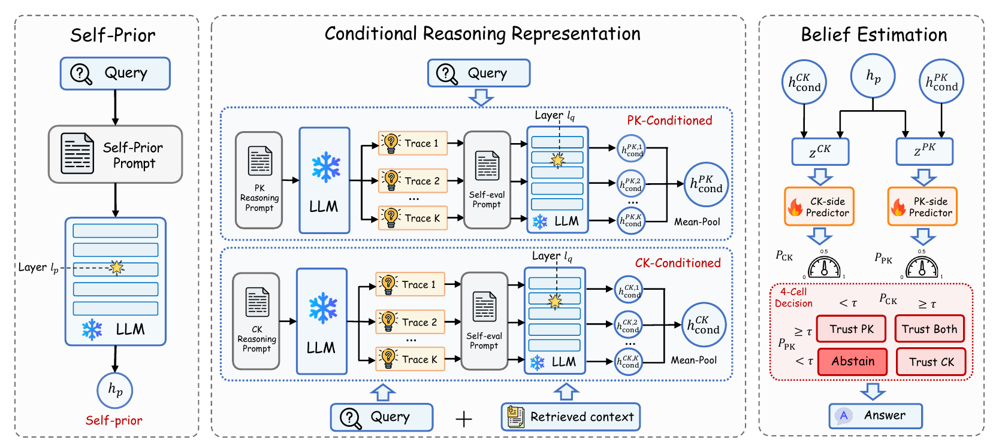
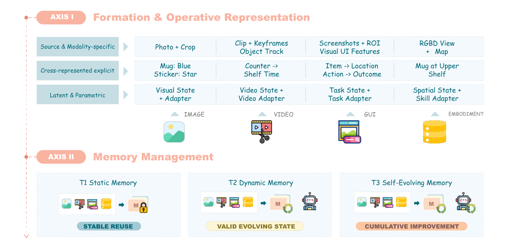

Agents
Reliable LLM Agents
Trajectory verification, adaptive rollback, and self-evolving skills that keep long-horizon agents on track.
I am a Master's student in Computer Science at Rutgers University. My research focuses on building reliable and adaptive LLM agents with stronger reasoning, learning, and knowledge-utilization capabilities. I study agentic systems that combine planning, memory, retrieval, and multimodal understanding for complex, long-horizon tasks.
I currently work with Prof. Xiao Luo (UW–Madison) and Prof. Hang Zhou (UNC Chapel Hill) on process-aware reward modeling for reinforcement learning of LLM reasoning. Previously, I worked with Prof. Dimitris N. Metaxas and Prof. Yongfeng Zhang at Rutgers, and with Prof. Yiwei Wang at UC Merced.
Beyond text, I am interested in multimodal agents. I study how large audio-language models represent and use non-speech audio such as sound and music, and I contributed to a survey on multimodal agent memory. Before moving to computer science, I studied linguistics as an undergraduate, which still shapes my interest in how models represent and use language.
Agents
Trajectory verification, adaptive rollback, and self-evolving skills that keep long-horizon agents on track.
Knowledge
Adaptive RAG routing and knowledge-conflict-aware generation that decide when and how to trust external evidence.
Reasoning
Process-level rewards for RL of LLM reasoning that capture step correctness, future utility, and reasoning structure.
Multimodal
Representation gaps in audio-language models and memory mechanisms for multimodal agents.
I am always happy to discuss research and collaboration. Feel free to email me!

IROS 2026IEEE/RSJ International Conference on Intelligent Robots and Systems (IROS), 2026 Accepted
A lightweight dual-head verifier that uses attention masking to separate local step errors from global trajectory drift, so rollback is triggered only when needed. Up to +19.2 pts success rate over GA-Rollback across 3B–14B models.

Under ReviewConference of the European Chapter of the ACL (EACL) Under Review
The first dataset and benchmark for adaptive RAG routing: 7,727 queries over 4 corpora and 5 RAG paradigms. No paradigm is universally optimal, and joint query–corpus routing beats any fixed choice on the effectiveness–efficiency trade-off.

Under ReviewInternational Conference on Learning Representations (ICLR) Under Review
SABER estimates whether to trust parametric knowledge, retrieved context, both, or abstain, using self-prior and multi-trace reasoning signals from a frozen LLM, with no LLM fine-tuning.

SurveyTransactions on Machine Learning Research (TMLR) Under Review
A survey that organizes multimodal agent memory along two axes: formation & representation, and memory management from static to dynamic to self-evolving memory.
Diagnosing why likelihood- and consensus-based rewards amplify model biases, and designing process-level rewards that score each step by current correctness and future utility, with graph-based verification across reasoning views.
Showed that sound and music evidence is encoded but under-used at decoding time, then localized critical layers and heads and added lightweight head-gating / LoRA interventions that fix erroneous predictions without full retraining.
Built a self-evolving skill framework that bootstraps reusable skills from successful rollouts and refines them from failures, with bandit-guided routing between skills and LLM fallback policies.
Designed an attention-based dual-head verifier that jointly models local step validity and global trajectory coherence, driving context-isolated verification and adaptive rollback.
Built the first adaptive RAG routing benchmark, standardizing 5 RAG paradigms under a unified retriever abstraction, and introduced dual-view query–corpus compatibility metrics with a unified effectiveness–efficiency protocol.
Built Pi-based agent infrastructure integrating Claude with internal systems for mouse engineering and manufacturing, plus hierarchical skill retrieval with dynamic loading and session memory.
Fine-tuned an industrial Qwen2.5-32B model with LoRA and built a 2,000+ entity Elasticsearch knowledge base for a downstream RAG system.
Co-developed the user-intent recognition module and a query preprocessing pipeline with sub-question generation and query rewriting.
Built microservices and RESTful APIs with Spring Boot and optimized the JPA persistence layer.
Automated network traffic analysis and server diagnostics for a 1,000+ device cluster.